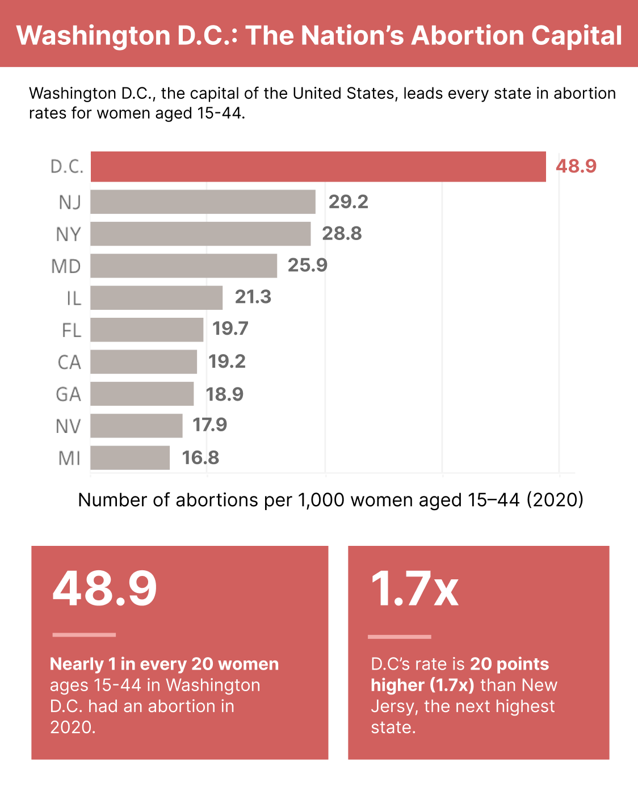
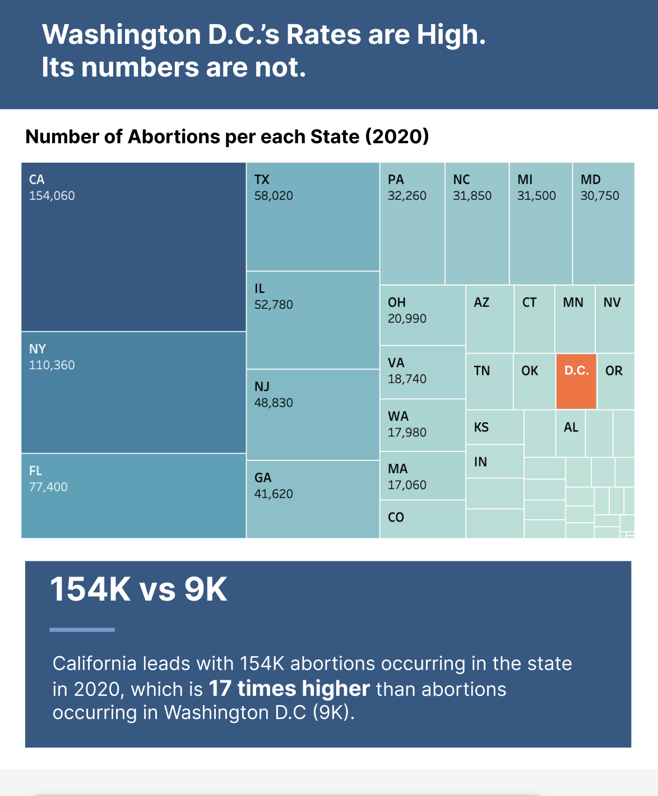

Proposition: Washington D.C. is Leading the Nation in Abortion.
FOR the Proposition

Design Decisions and Rationale:
- I decided to add statistics highlights at the bottom, because I thought that it would make readers offload their analysis and help steer their thinking in the direction I want them to think. I took inspiration from news sources, where they use large numbers to grasp a reader's attention, which is then followed by an explanation of that number. I would say that my usage is more deceptive, so I would score it a -1. However, since it is commonly used by reputable news sources, I believed that it wouldn't come off as deceptive to the readers. It was challenging to concisely highlight a statistic and explain it, and the left statistic box (48.9) can be confusing because the readers might not connect that 48.9 out of 1,000 women is approximately equivalent to 1 in 20 women. I also considered turning the statistic boxes into annotations, but the Visualization became cluttered, so I ended up with this design.
- My second design choice was the x-axis. I used the trick of changing the x-axis start value to make the bar graph difference seem more significant. I initially made the tick values smaller and lighter gray to make it less noticeable. However, that was still obvious because it is a common trick, and if a reader see that the x-axis starts from 10 instead of 0, they may be skeptical of the visualization even if the difference between D.C. and other states is significant. Thus, I removed the labeling all together, and put the numbers next to the bar. This was very effective, because the readers will have to manually label the axis to find that it does not start from 0. I would score this a -1.5, since it is still relatively easy for a sharp-eyed reader to notice but can be easily overlooked by others.
- My final design choice was to slightly increase the width of the box for Washington D.C. and gray out the other states. I made sure that width increase was not noticeable but enough to add visual weight to D.C. This way, the readers may percieve a bigger difference between D.C. and the other states because the bar's area differs more. The emphasis from the red and added width also draws more attention to Washington D.C. and away from the x-axis, which is critical because of the non-zero starting point. It also works with the story I am telling because I am trying to differentiate D.C. from the other states. I would rate this design choice 1 because it is earnest, but I do have some deceptive intentions.
AGAINST the Proposition

Design Decisions and Rationale:
- I used a tree map instead of a bar chart because I wanted to highlight how there are so many states that have a higher number of abortion cases than Washington D.C.. If I used a barchart, it would become very long or very condensed, but a tree map can concisely represent the key states without taking up a large area. This is not deceptive at all, so I would score this a 2. I also considered using a geographical map and using the shading to represent the number of abortions, but I realized that it wouldn't work well for Washington D.C. because it is extremely small. The visualization is effective because readers are quickly able to identify where D.C. is because it is highlighted in orange, and they can easily compare the difference in magnitude between D.C. and the other states like California and New York.
- I decided to use a statistic box as I did in the other visualization because it is an effective way to guide users on how to interpret the visualization. In this case, I am not being deceptive, so I would score it as 2. In terms of effectiveness, I like how the box gives me more space to add information, such as the "17 times higher" statistic, which solidifies the reader's understanding of the difference between California and Washington D.C. I did also consider using annotations, lines, and arrows, but I chose against it because I was afraid of the visualization becoming too cluttered.
- My final design choice was the title. I chose the current title because it is a strong rebuttal that addresses the previous visualization's claim and introduces a new counter claim. It is not deceptive, only arguing its opinion, so I will rate it as 2. I took a long time brainstorming different titles, but this one stood out to me because it is simple, states the truth, and lets the readers draw their own conclusion.
Final Reflection
Overall, it was initially difficult to make a visualization to support the claim because I knew it was wrong. However, once I had the data, I was surprised by how I could make an incorrect stance seem legitimate by focusing on the wrong thing. Inexperienced reader who assumes good intent from the writers can be easily tricked into thinking one way. And that person can be me. Now, I can clearly see how someone can run with the data and tell an inaccurate story. This homework taught me two things. The first lesson is to scruitize the visualizations I see more. There were many times in class where a fellow classmate pointed out a deceptive technique, which I was oblivious to. This experience solidified how easy it is for people to use these techniques. Instead of blindly reading the visualization and annotations, I want to step back and think, what do they want me to believe? The second lesson was on the importance of understanding the data. The lectures and assignments emphasized this concept, but this assignment showed me how one wrong assumption can create such effective yet incorrect visualizations. Although data wrangling and analysis can be tedious, I want to be more rigorous with it.
At the end of the day, it is not realistic to check every single data cell and uncover every single assumption we hold. That is why I believe "ethical analysis and visualization” is all about intention and thinking about the other side. Whenever we write a paper, we think about how others will argue against our thesis and write counterarguments. Not only does this strengthen your argument, but it is also an opportunity to scrutinize your own thesis and assumptions. I believe that creating visualizations should follow the same steps. If it is likely that the opposite side finds you design choice deceptive, then maybe it is a "misleading" persuasive choice, and you should re-evaluate the visualization. On the other hand, if the other side think it's clever, the design might be “acceptable.” In conclusion, no matter what we make, we must always consider others to ensure that we do not end up marginalizing or harming anyone.